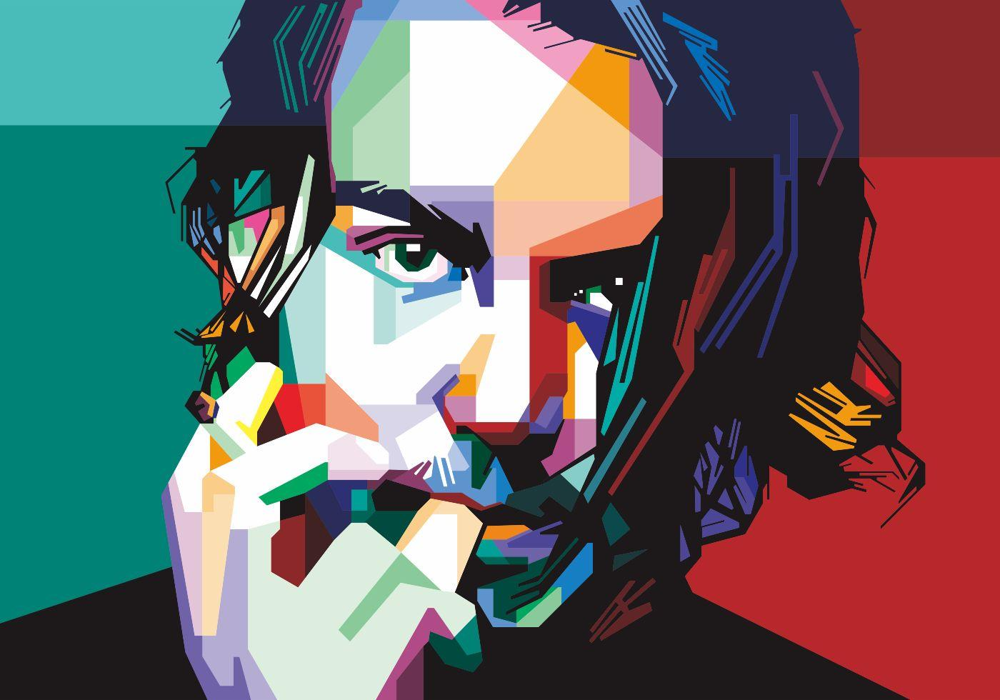

Johnny Depp
John Christopher Depp II
Bibiografía animada de un actor multifacético
Nacimiento
9 de junio de 1963 Owensboro (Kentucky, Estados Unidos)
Nacionalidad
Estadounidense
Familia de Origen
9 de junio de 1963 Owensboro (Kentucky, Estados Unidos)
Vida Amorosa
- Lori Anne Allison (matrimonio en 1983; divorcio en1985)
- Sherilyn Fenn (1985-1988)
- Winona Ryder (1990-1993)
- Kate Moss (1994-1998)
- Vanessa Paradis (1998-2012)
- Amber Heard (matrimonio en 2015; divorcio en 2017)
Hijos
- Lily-Rose Melody
- Jack Depp
Es una actriz y modelo franco-estadounidense.
Es hija del actor estadounidense Johnny Depp, y de la modelo, actriz y cantante francesa Vanessa Paradis
Nacida el 27 de mayo de 1999
Es actor al igual que su padre.
Es hijo del actor estadounidense Johnny Depp, y de la modelo, actriz y cantante francesa Vanessa Paradis
Nacido el 9 de abril de 2002
Filmografía
1984: A Nightmare on Elm Street
1985: Private Resort
1986: Platoon
1986: Slow Burn
1990: Cry-Baby
1990: Edward Scissorhands
1991: Freddy's Dead: The Final Nightmare
1993: El sueño de Arizona
1993: Benny & Joon
1993: ¿A quién ama Gilbert Grape?
1994: Ed Wood
1994: Don Juan DeMarco
1995: Nick of Time
1995: Dead Man
1997: Donnie Brasco
1997: The Brave
1998: Fear and Loathing in Las Vegas
1999: The Ninth Gate
1999: The Astronaut's Wife
1999: Sleepy Hollow
2000: Antes que anochezca
2000: Chocolat
2001: Blow
2001: Desde el infierno
2001: The Man Who Cried
2003: Pirates of the Caribbean: The Curse of the Black Pearl
2003: Once upon a time in Mexico
2004: Lost in La Mancha
2004: La ventana secreta
2004: Finding Neverland
2004: Happily Ever After
2005: Charlie y la fábrica de chocolate
2005: Corpse Bride
2005: The Libertine
2006: Pirates of the Caribbean: Dead Man's Chest
2007: Piratas del Caribe: en el fin del mundo
2007: Sweeney Todd: The Demon Barber of Fleet Street
2009: The Imaginarium of Doctor Parnassus
2009: Enemigos públicos
2010: Alicia en el país de las maravillas
2010: The Tourist
2011: Rango
2011: Pirates of the Caribbean: On Stranger Tides
2011: The Rum Diary
2011: Jack and Jill
2012: Sombras tenebrosas
2012: 21 Jump Street
2012: For No Good Reason
2013: El llanero solitario
2013: Lucky Them
2014: Transcendence
2014: Tusk
2014: Into the Woods
2015: Mortdecai
2015: Black Mass
2016: Alicia a través del espejo
2016: Yoga Hosers
2016: Donald Trump's The Art of the Deal: The Movie
2016: Animales fantásticos y dónde encontrarlos
2017: Piratas del Caribe: La venganza de Salazar
2017: Murder on the Orient Express
2018: Animales fantásticos: Los crímenes de Grindelwald
2018: Sherlock Gnomes
Discografía
1994: The Snake (de Shane MacGowan and The Popes) - canción «That Woman's Got Me Drinking»
1995: P (de P) - guitarra, bajo y coros
1997: Be Here Now (de Oasis) - canciones «Fade In-Out» y «Fade Away»
1999: Avenue B (de Iggy Pop) - canción «Hollywood Affair»
2000: Bliss (de Vanessa Paradis) - escritor en «St. Germain» y «Bliss», y guitarra en «Firmaman»
2003: Chocolat (banda sonora) - compositor y productor de «Sands' Theme»
2007: Sweeney Todd: The Demon Barber of Fleet Street (banda sonora)
2008: Pandemonium Ensues (de Glenn Tilbrook & The Fluffers) - canción «Too Close to the Sun»
2010: «I Put a Spell on You» (sencillo de Shane MacGowan) - guitarra
2010: Ex-Maniac (de Babybird) - canción «Unloveable»
2011: The Rum Diary (banda sonora) - productor, compositor y guitarra de «Kemp in the Village», y piano de «Mermaid Song»
2011: From Gainsbourg to Lulu (de Lulu Gainsbourg) - canción «Ballade de Melody Nelson»
2011: The Pleasures of Self Destruction (de Babybird) - canción «The Jesus Stag Night Club»
2012: Music from Another Dimension! (de Aerosmith) - canción «Freedom Fighter»
2012: Born Villain (de Marilyn Manson) - canción «You're So Vain»
2012: Collective Bargaining (de Jup & Rob Jackson) - canción «Street Runners»
2012: West of Memphis (banda sonora) - canciones «Little Lion Man» y «Damien Echols Death Row Letter Year 16»
2013: Son of Rogues Gallery: Pirate Ballads, Sea Songs & Chanteys (banda sonora) - guitarra en «The Mermaid»
2013: The Manhattan Blues Project (de Steve Hunter) - canción «The Brooklyn Shuffle»
2013: Love Songs (de Vanessa Paradis) - canción «New Year»
2013: The Lone Ranger (banda sonora) - guitarra en «Poor Paddy on the Railway» y arreglos en «Sweet Betsy from Pike»
2014: Lost on the River: The New Basement Tapes (de The New Basement Tapes) - canción «Kansas City»
2014: Into the Woods (banda sonora) - canción «Hello, Little Girl»
2015: Hollywood Vampires (de Hollywood Vampires) - guitarra